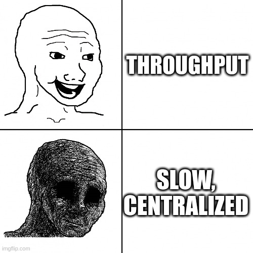
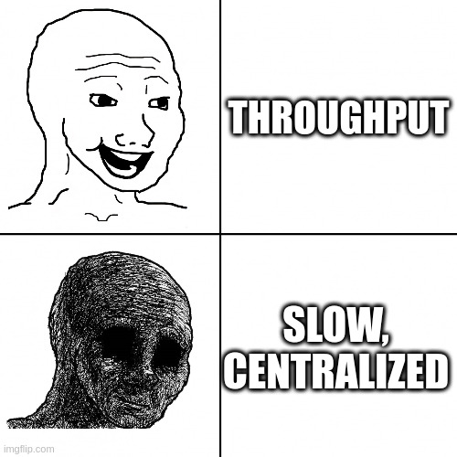

Proof of Efficiency
Decentralization for the zkEVM
Find the slides at arnau.eth.link/slides/PoE
What is a Rollup block batch?

How batches are added into a rollup?
 

Slow

Centralized
- Trustless: can't perform actions on behalf of the user
- Censorship: can blacklist users
- Stoppable: single point of failure

Proof of Efficiency
- Finality: separate sequencing and proofing in 2 async steps
- Decentralization: send sequence and proofs permissionless
Virtual state is valid & accessible
How virtual batches are added?

How virtual batches are added?

... Then, why do we need the consolidated state?
How batches are consolidated?
How batches are consolidated?

What about incentives?
- Sequencers: collect fees from L2 txs
- Aggregators: get paid by sequencers

Front running protection
- Each sequencer has it's own chain ID
- Txs are signed with specific chain ID and can only be included by the sequencer
Opening L2 fee collection
- Sequencers have a low entry barrier
- dApps can ask their users to use them as sequencers
- dApps collect fees from their users!
- Other models and specialized sequencers
#WAGMI